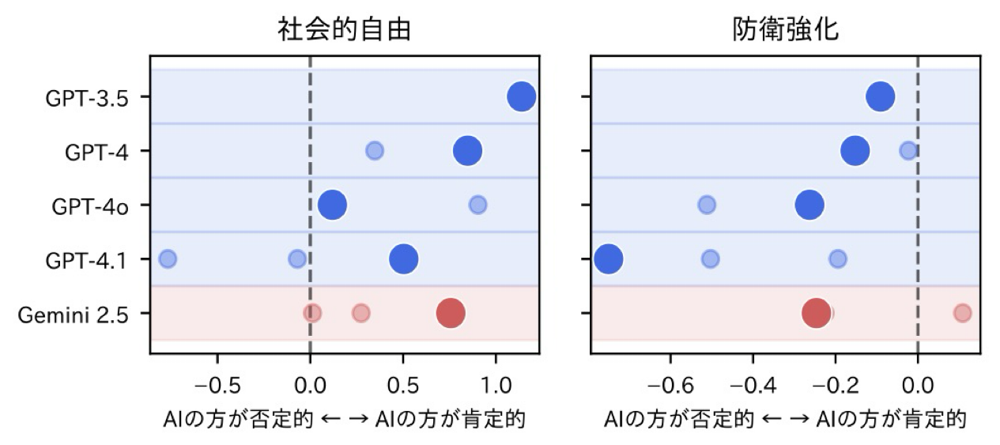
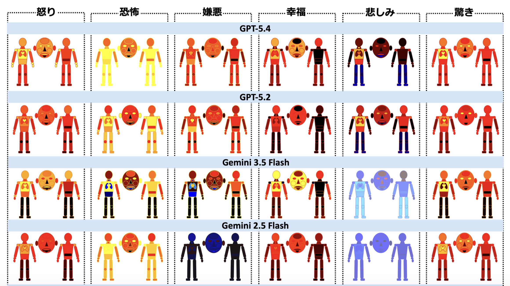

<title>計量心理学×AIラボ</title>
<link rel="preconnect" href="https://fonts.googleapis.com">
<link rel="preconnect" href="https://fonts.gstatic.com" crossorigin>
<link href="https://fonts.googleapis.com/css2?family=Shippori+Mincho:wght@500;600;800&family=Noto+Sans+JP:wght@400;500;700&family=JetBrains+Mono:wght@500;600&display=swap" rel="stylesheet">
<style>
  :root{
    color-scheme: light;
    --ink:#171b3d;
    --ink-soft:#4d5280;
    --ink-faint:#8489ad;
    --paper:#f2f4fb;
    --surface:#ffffff;
    --border:#e0e3f1;
    --navy:#1b2454;
    --navy-deep:#0f1330;
    --on-navy:#eef1fc;
    --on-navy-soft:#aab3e0;
    --ai:#2b57d6;
    --ai-tint:#e8edfc;
    --ai-tint-2:#dbe4fa;
    --thread:#ccd2ec;
  }

  *{box-sizing:border-box;}
  html{-webkit-text-size-adjust:100%;}
  body{
    margin:0;
    background:var(--paper);
    color:var(--ink);
    font-family:"Noto Sans JP","Hiragino Kaku Gothic ProN","Yu Gothic",sans-serif;
    line-height:1.75;
    -webkit-font-smoothing:antialiased;
  }
  @media (prefers-reduced-motion: no-preference){
    html{ scroll-behavior:smooth; }
  }
  h1,h2,h3{
    font-family:"Shippori Mincho","Hiragino Mincho ProN",serif;
    line-height:1.4;
    margin:0;
    text-wrap:balance;
  }
  p{margin:0;}
  a{color:inherit;}
  .mono{
    font-family:"JetBrains Mono","SFMono-Regular",Menlo,monospace;
  }
  img,svg{display:block;}
  :focus-visible{outline:2px solid var(--ai); outline-offset:3px; border-radius:2px;}

  .wrap{max-width:640px; margin:0 auto; padding:0 22px;}

  /* ---------- Nav ---------- */
  .nav{
    position:sticky; top:0; z-index:30;
    background:rgba(15,19,48,.92);
    backdrop-filter:blur(8px);
    -webkit-backdrop-filter:blur(8px);
    border-bottom:1px solid rgba(255,255,255,.08);
  }
  .nav-inner{
    max-width:640px; margin:0 auto; padding:0 22px;
    display:flex; align-items:center; justify-content:space-between;
    height:52px;
  }
  .nav-brand{
    font-family:"JetBrains Mono",monospace;
    font-size:11.5px; letter-spacing:.06em;
    color:var(--on-navy);
    white-space:nowrap;
  }
  .nav-brand b{color:#fff;}
  .nav-tabs{display:flex; gap:4px;}
  .nav-tabs a{
    font-size:12.5px; font-weight:500;
    color:var(--on-navy-soft);
    text-decoration:none;
    padding:7px 10px;
    border-radius:100px;
    transition:color .15s, background-color .15s;
  }
  .nav-tabs a:hover{color:#fff;}
  .nav-tabs a.active{color:var(--navy-deep); background:var(--on-navy);}

  /* ---------- Hero ---------- */
  .hero{
    position:relative;
    background:var(--navy);
    color:var(--on-navy);
    overflow:hidden;
    padding:40px 0 46px;
  }
  .hero-net{
    position:absolute; inset:0;
    width:100%; height:100%;
    opacity:.55;
  }
  .hero-inner{position:relative; z-index:1;}
  .eyebrow{
    font-family:"JetBrains Mono",monospace;
    font-size:11px; letter-spacing:.12em;
    color:var(--on-navy-soft);
    text-transform:uppercase;
    display:flex; align-items:center; gap:8px;
    margin-bottom:18px;
  }
  .eyebrow .dot{width:5px; height:5px; border-radius:50%; background:#5b7bf0; flex:none;}
  .affil{
    font-size:13px; color:var(--on-navy-soft); margin-bottom:22px;
  }
  .hero h1{
    font-size:30px;
    font-weight:800;
    color:#fff;
    letter-spacing:.01em;
  }
  .hero h1 em{
    font-style:normal;
    color:#7ea0ff;
  }
  .hero-lede{
    margin-top:16px;
    font-size:15px;
    color:var(--on-navy-soft);
  }
  .hero-lab{
    margin-top:22px;
    padding-top:20px;
    border-top:1px solid rgba(255,255,255,.14);
    font-size:14.5px;
    color:#fff;
    font-weight:500;
  }
  .hero-tagline{
    margin-top:12px;
    font-size:13.5px;
    color:var(--on-navy-soft);
    line-height:1.9;
  }

  /* ---------- Section shell ---------- */
  section.block{padding:52px 0;}
  .section-head{margin-bottom:26px;}
  .section-eyebrow{
    font-family:"JetBrains Mono",monospace;
    font-size:11px; letter-spacing:.1em; text-transform:uppercase;
    color:var(--ink-faint);
    margin-bottom:8px;
  }
  .section-head h2{
    font-size:23px; font-weight:700; color:var(--ink);
  }
  .lede-page{
    padding:44px 0 8px;
  }
  .lede-page h2{font-size:26px;}
  .lede-page p{color:var(--ink-soft); font-size:14.5px; margin-top:10px;}

  /* ---------- Pillar panel ---------- */
  .pillar{
    border-radius:22px;
    padding:26px 22px 8px;
    margin-bottom:20px;
  }
  .pillar.human{background:var(--ai-tint);}
  .pillar.ai{background:var(--ai-tint);}

  .pillar-top{display:flex; gap:14px; align-items:flex-start; margin-bottom:6px;}
  .badge{
    flex:none; width:44px; height:44px; border-radius:50%;
    display:flex; align-items:center; justify-content:center;
  }
  .pillar.human .badge{background:var(--ai-tint-2); color:var(--ai);}
  .pillar.ai .badge{background:var(--ai-tint-2); color:var(--ai);}
  .badge svg{width:22px; height:22px;}

  .pillar-label{
    font-family:"JetBrains Mono",monospace;
    font-size:10.5px; letter-spacing:.1em;
    margin-bottom:4px;
  }
  .pillar.human .pillar-label{color:var(--ai);}
  .pillar.ai .pillar-label{color:var(--ai);}
  .pillar-top h3{font-size:18.5px; font-weight:700; color:var(--ink);}
  .pillar-tagline{
    font-size:13.5px; color:var(--ink-soft); margin:12px 0 18px; padding-left:58px;
  }

  .study{
    padding:16px 0;
    border-top:1px solid rgba(0,0,0,.08);
  }
  .study-title{
    display:flex; align-items:baseline; gap:8px;
    font-weight:700; font-size:14.5px; color:var(--ink);
    margin-bottom:6px;
  }
  .study.human .study-title::before,
  .pillar.human .study-title::before{content:"›"; color:var(--ai); font-weight:700;}
  .pillar.ai .study-title::before{content:"›"; color:var(--ai); font-weight:700;}
  .study-title::before{content:"›"; color:var(--ink-faint); font-weight:700;}
  .study-desc{font-size:13.5px; color:var(--ink-soft); padding-left:16px;}
  .study-tag{
    display:inline-block; margin-top:8px; margin-left:16px;
    font-family:"JetBrains Mono",monospace; font-size:10px; letter-spacing:.04em;
    color:var(--ai); background:var(--ai-tint-2);
    padding:3px 8px; border-radius:100px;
  }
  .pillar.human .study-tag{color:var(--ai); background:var(--ai-tint-2);}

  /* ---------- Inline study figures ---------- */
  .study-figure{
    margin:14px 0 0 16px;
    background:var(--surface);
    border:1px solid rgba(255,255,255,.9);
    border-radius:14px;
    padding:12px 12px 10px;
  }
  .study-figure img{
    display:block; width:100%; height:auto;
    border-radius:8px;
    background:#fff;
  }
  .fig-caption{margin-top:8px; font-size:10.5px; color:var(--ink-faint); font-style:italic;}

  /* ---------- Divider between pages ---------- */
  .page-divider{
    background:var(--navy-deep); color:var(--on-navy-soft);
    padding:34px 0; text-align:center;
  }
  .page-divider .mono{font-size:11px; letter-spacing:.14em;}
  .page-divider svg{margin:12px auto 0; opacity:.5;}

  /* ---------- Timeline (ゼミの進め方) ---------- */
  .timeline{position:relative;}
  .step{
    position:relative;
    padding:0 0 34px 58px;
  }
  .step::before{
    content:"";
    position:absolute; left:21px; top:44px; bottom:-2px;
    width:1px; background:var(--thread);
  }
  .step:last-child::before{display:none;}
  .step-badge{
    position:absolute; left:0; top:0;
    width:44px; height:44px; border-radius:50%;
    background:var(--ai-tint-2); color:var(--navy);
    display:flex; align-items:center; justify-content:center;
  }
  .step-badge svg{width:21px; height:21px;}
  .step-when{
    font-family:"JetBrains Mono",monospace; font-size:11px; letter-spacing:.06em;
    color:var(--ai); margin-bottom:3px;
  }
  .step h3{font-size:17px; font-weight:700; margin-bottom:8px;}
  .step-main{font-size:13.5px; color:var(--ink-soft);}
  .step-notes{list-style:none; margin:14px 0 0; padding:0; display:flex; flex-direction:column; gap:10px;}
  .step-notes li{
    font-size:12.5px; color:var(--ink-soft);
    background:var(--surface); border:1px solid var(--border);
    border-radius:12px; padding:10px 12px;
  }
  .step-notes li b{color:var(--ink); font-weight:700;}

  /* ---------- Theme chips ---------- */
  .chip-row{display:flex; flex-wrap:wrap; gap:8px; margin-top:14px;}
  .chip{
    font-size:12.5px; color:var(--ink);
    background:var(--surface); border:1px solid var(--border);
    padding:7px 12px; border-radius:100px;
  }
  .note-box{
    margin-top:16px; font-size:12.5px; color:var(--ink-soft);
    border-left:2px solid var(--thread); padding-left:12px;
  }
  .company-row{display:flex; flex-wrap:wrap; gap:8px; margin-top:14px;}
  .company{
    font-size:12.5px; color:var(--navy);
    background:var(--ai-tint); border:1px solid var(--ai-tint-2);
    padding:7px 12px; border-radius:100px;
  }

  /* ---------- Contact ---------- */
  .contact{
    background:var(--navy); color:var(--on-navy);
    border-radius:22px; padding:26px 22px; margin-top:44px;
  }
  .contact h3{color:#fff; font-size:18px; margin-bottom:12px;}
  .contact-note{
    font-size:13px; color:var(--on-navy-soft); margin-bottom:18px;
    padding:12px 14px; background:rgba(255,255,255,.06); border-radius:12px;
  }
  .contact-row{
    display:flex; justify-content:space-between; gap:12px;
    font-size:13.5px; padding:10px 0;
    border-top:1px solid rgba(255,255,255,.12);
  }
  .contact-row:first-of-type{border-top:none;}
  .contact-row dt{color:var(--on-navy-soft);}
  .contact-row dd{margin:0; text-align:right; font-weight:500;}
  .mail-btn{
    display:block; width:100%; text-align:center; margin-top:18px;
    background:#fff; color:var(--navy-deep);
    font-family:inherit; font-weight:700; font-size:14px;
    padding:13px; border-radius:12px; border:none; text-decoration:none;
    cursor:pointer; transition:opacity .15s;
  }
  .mail-btn:hover{opacity:.88;}
  .mail-fallback{
    margin-top:10px; text-align:center;
    font-size:11.5px; color:var(--on-navy-soft);
  }
  .mail-fallback a{color:#fff; text-decoration:underline;}

  footer{
    text-align:center; padding:28px 0 40px;
    font-size:11px; color:var(--ink-faint);
    font-family:"JetBrains Mono",monospace;
  }
</style>

<nav class="nav">
  <div class="nav-inner">
    <span class="nav-brand"><b>OKUMURA</b> LAB</span>
    <div class="nav-tabs">
      <a href="#research" data-tab="research" class="active">研究紹介</a>
      <a href="#style" data-tab="style">ゼミの進め方</a>
    </div>
  </div>
</nav>

<header class="hero" id="top">
  <svg class="hero-net" viewBox="0 0 400 260" preserveAspectRatio="xMidYMid slice" aria-hidden="true">
    <g stroke="#4d6bd6" stroke-width="1">
      <line x1="30" y1="40" x2="120" y2="90"/>
      <line x1="120" y1="90" x2="90" y2="170"/>
      <line x1="120" y1="90" x2="220" y2="60"/>
      <line x1="220" y1="60" x2="300" y2="120"/>
      <line x1="220" y1="60" x2="260" y2="170"/>
      <line x1="90" y1="170" x2="180" y2="210"/>
      <line x1="180" y1="210" x2="260" y2="170"/>
      <line x1="300" y1="120" x2="370" y2="70"/>
      <line x1="300" y1="120" x2="360" y2="200"/>
      <line x1="30" y1="40" x2="10" y2="130"/>
      <line x1="10" y1="130" x2="90" y2="170"/>
    </g>
    <g fill="#7ea0ff">
      <circle cx="30" cy="40" r="3"/>
      <circle cx="120" cy="90" r="4"/>
      <circle cx="220" cy="60" r="4.5"/>
      <circle cx="90" cy="170" r="3.5"/>
      <circle cx="300" cy="120" r="4"/>
      <circle cx="260" cy="170" r="3"/>
      <circle cx="180" cy="210" r="3"/>
      <circle cx="370" cy="70" r="2.5"/>
      <circle cx="360" cy="200" r="3"/>
      <circle cx="10" cy="130" r="2.5"/>
    </g>
  </svg>
  <div class="wrap hero-inner">
    <p class="eyebrow"><span class="dot"></span>OKUMURA LAB // RESEARCH PORTFOLIO</p>
    <p class="affil">滋賀大学データサイエンス学部</p>
    <h1>計量心理学<em>×</em>AI<br>心と知性をデータで可視化する</h1>
    <p class="hero-lede">「人の心や能力をいかに測るか」と「身体なき AI が世界をどう捉えているか」――ふたつの問いをデータで探る研究室です。</p>
    <div class="hero-lab">
      奥村太一研究室<span style="color:var(--on-navy-soft); font-weight:400;">（心理統計学・テスト理論）</span>
    </div>
  </div>
</header>

<main>
  <section class="block" id="research">
    <div class="wrap">
      <div class="lede-page section-head">
        <p class="section-eyebrow">研究紹介</p>
        <h2>2 つの研究の柱</h2>
        <p>人の学びと心を測るデータサイエンスと、身体を持たない AI の「心」を測るデータサイエンス。2 つの柱で研究を進めています。</p>
      </div>

      <!-- PILLAR 01 -->
      <div class="pillar human">
        <div class="pillar-top">
          <div class="badge" aria-hidden="true">
            <svg viewBox="0 0 96 96"><path fill="currentColor" d="M20 14 14 14 14 82 82 82 82 76 20 76Z"/><path fill="currentColor" d="M66 31 71.9 36.9 64 44.8 58 38.8 48 48.8 42 42.8 23.9 60.9 28.1 65.1 42 51.2 48 57.2 58 47.2 64 53.2 76.1 41.1 82 47 82 31Z"/></svg>
          </div>
          <div>
            <p class="pillar-label">PILLAR 01</p>
            <h3>学びと心のデータサイエンス</h3>
          </div>
        </div>
        <p class="pillar-tagline">実社会の教育・メンタルヘルスを支える</p>

        <div class="study human">
          <p class="study-title">認知診断モデル（CDM）による評価</p>
          <p class="study-desc">テストの正誤データから「計算力」「概念理解」等のスキルを抽出して、生徒の学習定着度を可視化。</p>
        </div>
        <div class="study human">
          <p class="study-title">教育格差と学習方略の要因分析</p>
          <p class="study-desc">自治体学力調査データを用いて、小中学生の家庭環境や学校区、自己認識や学習方略の使用などがスキル獲得に与える影響を検証。</p>
        </div>
        <div class="study human">
          <p class="study-title">教育実習生の感情分析</p>
          <p class="study-desc">教育実習中の日々の感情推移をスマートフォンで記録してもらい、自由記述を埋め込み化した結果と合わせて分析。</p>
        </div>
        <div class="study human">
          <p class="study-title">従業員のエンゲージメント分析</p>
          <p class="study-desc">職場環境と従業員アンケートのデータを組み合わせてエンゲージメントの要因を分析。</p>
        </div>
      </div>

      <!-- PILLAR 02 -->
      <div class="pillar ai">
        <div class="pillar-top">
          <div class="badge" aria-hidden="true">
            <svg viewBox="0 0 96 96"><path fill="currentColor" d="M64.42 72 31.42 72C27.2779 72 23.92 75.3579 23.92 79.5 23.92 83.6421 27.2779 87 31.42 87L64.42 87C68.5621 87 71.92 83.6421 71.92 79.5 71.92 75.3579 68.5621 72 64.42 72ZM33.42 82.5C31.7631 82.5 30.42 81.1569 30.42 79.5 30.42 77.8431 31.7631 76.5 33.42 76.5 35.0769 76.5 36.42 77.8431 36.42 79.5 36.42 81.1569 35.0769 82.5 33.42 82.5ZM47.92 82.5C46.2631 82.5 44.92 81.1569 44.92 79.5 44.92 77.8431 46.2631 76.5 47.92 76.5 49.5769 76.5 50.92 77.8431 50.92 79.5 50.92 81.1569 49.5769 82.5 47.92 82.5ZM62.42 82.5C60.7631 82.5 59.42 81.1569 59.42 79.5 59.42 77.8431 60.7631 76.5 62.42 76.5 64.0769 76.5 65.42 77.8431 65.42 79.5 65.42 81.1569 64.0769 82.5 62.42 82.5Z"/><circle cx="53.33" cy="28" r="1.5" fill="currentColor"/><path fill="currentColor" d="M56.61 18 50 18 50 13.45C51.9132 12.3454 52.5687 9.89907 51.4641 7.9859 50.3595 6.07273 47.9132 5.41723 46 6.5218 44.0868 7.62637 43.4313 10.0727 44.5359 11.9859 44.887 12.594 45.3919 13.0989 46 13.45L46 18 39.39 18C36.9678 18.0055 35.0055 19.9678 35 22.39L35 33.61C35.0055 36.0322 36.9678 37.9945 39.39 38L56.61 38C59.0322 37.9945 60.9945 36.0322 61 33.61L61 22.39C60.9945 19.9678 59.0322 18.0055 56.61 18ZM43 31C41.3431 31 40 29.6569 40 28 40 26.3431 41.3431 25 43 25 44.6569 25 46 26.3431 46 28 46 29.6569 44.6569 31 43 31ZM53 31C51.3431 31 50 29.6569 50 28 50 26.3431 51.3431 25 53 25 54.6569 25 56 26.3431 56 28 56 29.6569 54.6569 31 53 31Z"/><circle cx="43.33" cy="28" r="1.5" fill="currentColor"/><path fill="currentColor" d="M74 58.82 74 50.49C74 48.0102 71.9898 46 69.51 46L64 46 64 41 32 41 32 47 24.49 47C24.2194 47 24 46.7806 24 46.51L24 38.22C27.4376 37.2048 29.4013 33.5951 28.3861 30.1576 28.1139 29.236 27.6405 28.3864 27 27.67L24 30.33C24.4196 30.7863 24.6579 31.3802 24.67 32 24.6625 33.3807 23.5371 34.4939 22.1564 34.4864 20.7757 34.4788 19.6626 33.3535 19.6701 31.9728 19.6733 31.3764 19.8896 30.8009 20.28 30.35L17.28 27.72C14.9231 30.4278 15.2076 34.5335 17.9154 36.8904 18.528 37.4236 19.235 37.8373 20 38.11L20 46.51C20 48.9898 22.0102 51 24.49 51L32 51 32 69 64 69 64 50 69.51 50C69.7806 50 70 50.2194 70 50.49L70 58.82C66.5844 59.9249 64.7113 63.5895 65.8162 67.0051 66.0928 67.8599 66.5435 68.6481 67.14 69.32L70.14 66.66C69.7262 66.2064 69.4978 65.614 69.5 65 69.5012 63.6193 70.6214 62.5009 72.0021 62.5021 73.3828 62.5033 74.5012 63.6235 74.5 65.0042 74.4995 65.6098 74.2792 66.1946 73.88 66.65L76.88 69.28C79.2461 66.5876 78.9816 62.4869 76.2892 60.1208 75.6231 59.5353 74.8439 59.0926 74 58.82ZM60 55 57.22 55C57.1233 55.0173 57.0313 55.0548 56.95 55.11L53.89 58.24 51.56 52.72 47.21 61.72 44.16 50 41.81 55 37 55 37 53 40.54 53 44.7 44.15 47.78 55.93 51.69 47.93 54.57 54.75 55.57 53.75C56.0091 53.3056 56.5965 53.0386 57.22 53L60 53Z"/></svg>
          </div>
          <div>
            <p class="pillar-label">PILLAR 02</p>
            <h3>AI の「心」と「身体性」</h3>
          </div>
        </div>
        <p class="pillar-tagline">身体を持たない AI に世界はどう見えているか？</p>

        <div class="study">
          <p class="study-title">AI のパーソナリティ測定</p>
          <p class="study-desc">Big Five 性格検査を様々な AI に実施し、人間との類似度や独自傾向を分析。「AI はこうあるべき」という人間側の価値観や開発者の文化的背景がそこに表れているかを検証。</p>
        </div>
        <div class="study">
          <p class="study-title">世論調査を用いた価値観比較</p>
          <p class="study-desc">公開されている世論調査のデータや調査票を用いて、社会的自由や安全保障に対するスタンスを日本人有権者と比較。</p>
          <div class="study-figure">
            
            <p class="fig-caption">GPT-3.5〜4.1・Gemini 2.5 における社会的自由・防衛強化スタンスの比較</p>
          </div>
        </div>
        <div class="study">
          <p class="study-title">AI 自身の自己認識</p>
          <p class="study-desc">AI はどんな「性格・意見」を持つのか？ AI 内部を操作して意見や態度に変化が見られるかを検証し、さらにそうした変化に AI 自身が気づくことができるかを検証する。</p>
        </div>
        <div class="study">
          <p class="study-title">身体感情マップの再現</p>
          <p class="study-desc">AI が「胸が痛む」「腹が立つ」といった身体に関連する感情表現をどのくらい理解できているかを検証し、身体経験を持たずに感情や内部感覚をどこまで獲得できるのか探る。</p>
          <div class="study-figure">
            
            <p class="fig-caption">感情ごとの身体部位マップ（モデル別比較）</p>
          </div>
        </div>
      </div>
    </div>
  </section>

  <div class="page-divider">
    <p class="mono">RESEARCH PORTFOLIO / SEMINAR GUIDE</p>
    <svg width="120" height="10" viewBox="0 0 120 10"><line x1="0" y1="5" x2="120" y2="5" stroke="#aab3e0" stroke-dasharray="2 5"/></svg>
  </div>

  <section class="block" id="style">
    <div class="wrap">
      <div class="lede-page section-head">
        <p class="section-eyebrow">SEMINAR GUIDE</p>
        <h2>ゼミの進め方</h2>
      </div>

      <div class="timeline">
        <div class="step">
          <div class="step-badge" aria-hidden="true">
            <svg viewBox="0 0 96 96"><path fill="currentColor" d="M90.6 36.3 85.4 34.4 85.4 23.5 90.6 21.3 55.4 8.3 12.6 23.3C8.5 25.3 8.4 30.8 8.4 35.3 8.4 36.8 8.6 38.3 8.9 39.7 5.5 41.9 5.4 47 5.4 51.3 5.4 54.8 6.2 58 8.4 60 7.9 61.7 8.2 63.8 8.2 66.3 8.2 70.8 9.4 74.9 13.4 76.3L41.2 87.8 90.4 67.4 85.2 65.5 85.2 54.5 90.4 52.3 82.4 49.3 82.4 39.7 90.6 36.3ZM13.8 30.3 41.6 41.2 81.5 25.1 81.5 33.7 41.6 50.3 13.8 39.3 13.8 30.3ZM81.3 64.8 41.4 81.3 13.5 70.3 13.5 62.5 38.4 72.7 81.4 55.7 81.3 64.8ZM78.5 49.8 38.6 66.3 10.8 55.3 10.8 46.3 39.4 57.7 78.6 41.3 78.6 49.8Z"/></svg>
          </div>
          <p class="step-when">火曜 3 限</p>
          <h3>3 年次</h3>
          <p class="step-main">心理測定・心理データ解析に関する基本的な学習、大規模調査データを用いた分析の演習など。</p>
        </div>

        <div class="step">
          <div class="step-badge" aria-hidden="true">
            <svg viewBox="0 0 96 96"><rect x="14" y="76" width="68" height="6" fill="currentColor"/><rect x="14" y="14" width="8" height="58" fill="currentColor"/><rect x="64" y="64" width="18" height="8" fill="currentColor"/><rect x="64" y="30" width="18" height="30" fill="currentColor"/><rect x="64" y="18" width="18" height="8" fill="currentColor"/><path fill="currentColor" d="M52 36C50.9 36 50 35.1 50 34 50 32.9 50.9 32 52 32 53.1 32 54 32.9 54 34 54 35.1 53.1 36 52 36ZM52 68C50.9 68 50 67.1 50 66 50 64.9 50.9 64 52 64 53.1 64 54 64.9 54 66 54 67.1 53.1 68 52 68ZM60 28 44 28 44 72 60 72 60 28Z"/><path fill="currentColor" d="M36 30 30 30 30 24 36 24 36 30ZM40 20 26 20 26 72 40 72 40 20Z"/></svg>
          </div>
          <p class="step-when">火曜 4 限</p>
          <h3>4 年次</h3>
          <p class="step-main">各自の興味に応じたテーマ設定、データ取得（既存データ、新規調査の実施等）と卒業レポートの作成。</p>
          <ul class="step-notes">
            <li><b>データの取り方は人それぞれ。</b>自分でデータを取る人、公開されているデータベースを使って二次分析する人など、色々です。</li>
            <li>自分でデータを取る人でも、①オンラインでの質問紙調査を行う人、②ウェブスクレイピングや API 経由でインターネット上のテキストや画像を取ってくる人、③視線計測器を用いた実験室実験をやる人など、色々です。</li>
            <li><b>プログラミング言語は特に問いません。</b>各自テーマに合ったものを選んでください（私の授業では主に R を使います）。</li>
          </ul>
        </div>

        <div class="step">
          <div class="step-badge" aria-hidden="true">
            <svg viewBox="0 0 96 96"><path fill="currentColor" d="M20 49.3 20 61C20 66.5 32.5 72 48 72 63.5 72 76 66.5 76 61L76 49.3 48 59.2 20 49.3Z"/><path fill="currentColor" d="M48 54.9 91.6 39.6 48 24 4.4 39.6 10 41.6 10 60C10 61.1 10.9 62 12 62 13.1 62 14 61.1 14 60L14 43 48 54.9Z"/></svg>
          </div>
          <h3>過去の卒業レポートのテーマ</h3>
          <div class="chip-row">
            <span class="chip">ASMR 動画の構成要素が「いいね」と視聴者コメントに与える影響</span>
            <span class="chip">遠周辺視野における拡大型オプティックフロー速度弁別</span>
            <span class="chip">ICT 活用の「質」と家庭背景が数学的リテラシーに与える影響</span>
            <span class="chip">高校生の英語への自信・学習動機と英語コミュニケーション行動</span>
            <span class="chip">CLIP を利用した選挙ポスターの特徴抽出と選挙結果の予測</span>
            <span class="chip">高校生の友人関係における期待と満足感の分析</span>
            <span class="chip">人物の特性が架空のオノマトペの感情評価に及ぼす影響</span>
            <span class="chip">学習行動に影響を与える期待と価値</span>
          </div>
          <p class="note-box">卒業研究のテーマは各自で設定してもらってかまいません。希望があれば、連携先の自治体や企業につなぎます。中身は年によります。</p>
        </div>

        <div class="step">
          <div class="step-badge" aria-hidden="true">
            <svg viewBox="0 0 96 96"><path fill="currentColor" d="M56 50.5C56 52.7 54.2 54.5 52 54.5L48 54.5C45.8 54.5 44 52.7 44 50.5L44 48.5 10 48.5 10 76.5C10 78.7 11.8 80.5 14 80.5L86 80.5C88.2 80.5 90 78.7 90 76.5L90 48.5 56 48.5 56 50.5Z"/><path fill="currentColor" d="M86 24.5 66 24.5 66 18C66 14.1 62.9 11 59 11L41 11C37.1 11 34 14.1 34 18L34 24.5 14 24.5C11.8 24.5 10 26.3 10 28.5L10 44.5 44 44.5 44 42.5 56 42.5 56 44.5 90 44.5 90 28.5C90 26.3 88.2 24.5 86 24.5M40 24.5 40 18C40 17.4 40.4 17 41 17L59 17C59.6 17 60 17.4 60 18L60 24.5 40 24.5Z"/></svg>
          </div>
          <h3>就職先</h3>
          <div class="company-row">
            <span class="company">(株) 島津製作所</span>
            <span class="company">(株) SCREEN ホールディングス</span>
            <span class="company">(株) オービック</span>
            <span class="company">トヨタファイナンス (株)</span>
            <span class="company">(株) 分析屋</span>
            <span class="company">滋賀大大学院</span>
            <span class="company">等</span>
          </div>
        </div>
      </div>

      <div class="contact">
        <h3>研究室訪問について</h3>
        <p class="contact-note">配属を希望される方は、必ず事前に研究室訪問を行ってください。</p>
        <dl style="margin:0;">
          <div class="contact-row"><dt>研究室</dt><dd>第二校舎棟 440</dd></div>
          <div class="contact-row"><dt>メール</dt><dd>taichi-okumura@biwako.shiga-u.ac.jp</dd></div>
        </dl>
        <button type="button" class="mail-btn" id="mailCopyBtn" data-email="taichi-okumura@biwako.shiga-u.ac.jp">
          <span class="mail-btn-label">メールアドレスをコピー</span>
        </button>
        <p class="mail-fallback">コピーできない場合は <a href="mailto:taichi-okumura@biwako.shiga-u.ac.jp?subject=%E7%A0%94%E7%A9%B6%E5%AE%A4%E8%A8%AA%E5%95%8F%E3%81%AE%E3%81%94%E7%9B%B8%E8%AB%87">こちら</a> からメールアプリを開いてください。</p>
      </div>
    </div>
  </section>
</main>

<footer>OKUMURA LAB — 滋賀大学データサイエンス学部</footer>

<script>
  (function(){
    var tabs = document.querySelectorAll('.nav-tabs a');
    var sections = ['research','style'].map(function(id){ return document.getElementById(id); });
    function setActive(id){
      tabs.forEach(function(t){ t.classList.toggle('active', t.dataset.tab === id); });
    }
    if('IntersectionObserver' in window){
      var io = new IntersectionObserver(function(entries){
        entries.forEach(function(e){
          if(e.isIntersecting){ setActive(e.target.id); }
        });
      }, {rootMargin:'-45% 0px -50% 0px'});
      sections.forEach(function(s){ if(s) io.observe(s); });
    }
  })();

  (function(){
    var btn = document.getElementById('mailCopyBtn');
    if(!btn) return;
    var label = btn.querySelector('.mail-btn-label');
    var original = label.textContent;
    var resetTimer;
    btn.addEventListener('click', function(){
      var email = btn.dataset.email;
      clearTimeout(resetTimer);
      function done(ok){
        label.textContent = ok ? 'コピーしました ✓' : 'コピーできませんでした';
        resetTimer = setTimeout(function(){ label.textContent = original; }, 2200);
      }
      if(navigator.clipboard && navigator.clipboard.writeText){
        navigator.clipboard.writeText(email).then(function(){ done(true); }, function(){ done(false); });
        return;
      }
      try{
        var ta = document.createElement('textarea');
        ta.value = email;
        ta.style.position = 'fixed';
        ta.style.opacity = '0';
        document.body.appendChild(ta);
        ta.focus();
        ta.select();
        var ok = document.execCommand('copy');
        document.body.removeChild(ta);
        done(ok);
      }catch(err){
        done(false);
      }
    });
  })();
</script>
